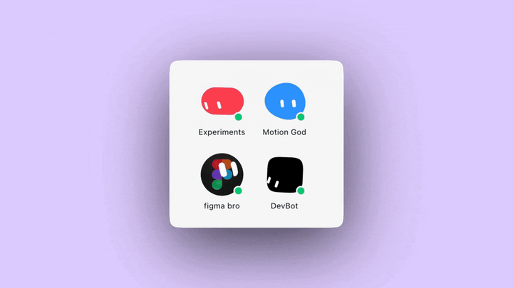
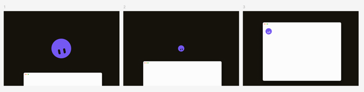
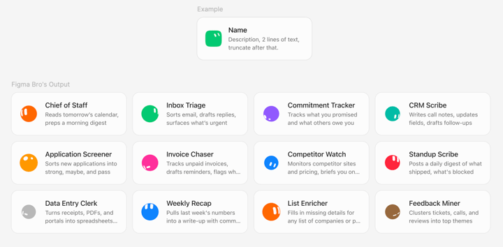
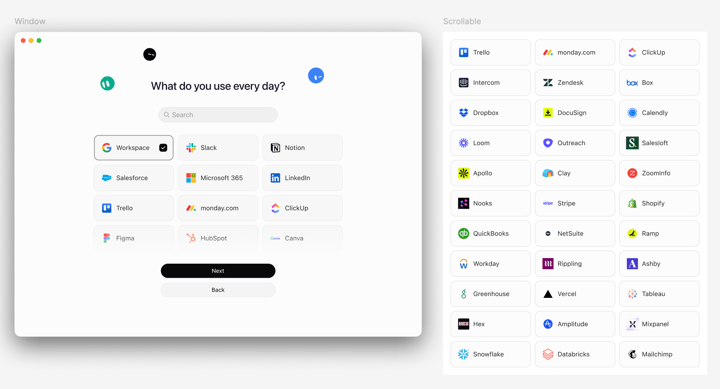

Official guides · 2/27
Designing Grok Bot with Grok Bot
How a designer uses always-on Grok Bot (xAI's AI assistant that comes with its own computer) agents to explore more ideas, work with real production assets, and keep judgment in the loop.
At SpaceXSI, we’re building agents that can take an idea and begin making it real. For designers, that changes what’s worth exploring.
Design has always been a process of giving form to an idea: making something, reacting to it, and changing it until it begins to feel right. As making becomes easier, we can explore more directions, react sooner, and let an idea reveal what it wants to become instead of defining it before we begin.
I’ve been using Grok Bot to design Grok Bot. And while this hasn’t replaced existing tools in my kit, using AI design agents has changed both how quickly I can bring an idea to life and how many ideas I’m willing to explore in the first place.
Grok Bot gives me a team of always-on AI design agents with their own computers. They have memory, can use tools, and can carry work from an initial idea to a finished artifact. They also keep working while I’m AFK, which matters because inspiration often strikes away from my desk.
Meet my bots

Figma Bro handles repetitive production work in Figma. Motion God helps me prototype as I describe how interactions should feel. Experiments is where I send ideas that I want to make tangible before I know exactly what they should become. Devbot answers engineering questions and helps the other bots understand how an idea should actually get built.
The names make each bot’s role clear, but they don’t work in isolation. My design agents can huddle with one another, delegate parts of a project, and bring the work back together. Here are three recent examples.
Experiments: you can just do things
One of the earliest ideas I wanted to explore was how to make Bots accessible anytime, anywhere. I wanted to try keyboard shortcuts, OS-level entry points, and other ways of invoking one, so I tasked Experiments with building a series of explorations in ambient Bot access.
The first placed Bot in the Mac’s notch. It could remain tucked into a fixed location while it worked, emerge when something needed attention, and expand into a small workspace when I wanted to see more. It gave the agent a home without asking me to keep another window open.
Bot tucked into the Mac notch.
The second had Bot peek in from the corner of the desktop on hover. This felt less like a persistent interface and more like a character entering the scene when invoked or when it had something to say.
Bot peeking in from the corner of the desktop.
The third had Bot follow the cursor as a companion, creating a closer connection to whatever I was doing in the moment.
Bot following the cursor as a companion.
I described the behaviors to Experiments, and it worked out how to make each one tangible. It delegated the character movement and transitions to Motion God, the desktop behavior and implementation questions to Devbot, then brought everything together into prototypes I could actually try. I could encounter each version naturally throughout my day and notice when it felt helpful, distracting, or somewhere in between.
That’s why I keep an agent specifically for Experiments. I don’t need to decide that an idea is sensible, feasible, or destined for the roadmap before making it real enough to judge. None of these concepts shipped exactly as explored. That wasn’t really the point. I had an idea, made three versions real, and learned from each one. You can just do things.
Motion God: work with the real thing
Historically, motion is where I’d hand an idea off to an expert on the team. I could describe the behavior or mock up a few keyframes, but someone else would have to make it real before I could react to it. With Motion God, I can stay in the exploratory loop and direct the interaction by feel.
As part of an email campaign, I wanted to prototype a promotional video of the Grok Bot character. The sequence was fairly specific: Bot appears, notices the app window, and bounces into place.

Bot appears, notices the app window, and bounces into placeI didn’t want the design agent to recreate the character from a screenshot or generate an approximation. I wanted it working with the same asset that already lived and moved in the product. So I had Motion God build a playground on localhost around the actual animation spec file. That way, I could manually adjust timing, springs, distance, scale, and easing while it was running.
But I also found myself giving short and comparative feedback: “hold the look down-left longer.” “Bounce is too exaggerated.” Motion God would make the change, and I could immediately watch the whole sequence again.
That’s much closer to how I naturally design motion. I usually don’t know off the top of my head whether a transition should take 280 or 340 milliseconds before I see it. But I do know how to describe it, and I know when it feels just right.
The interesting part wasn’t that my bot “made an animation.” It was that I could give it a real production asset and create a working environment around it. I could tune the motion directly through deterministic controls or continue directing Motion God in the same language I’d use with a human collaborator.
Motion God playing the production character against the real window.
Figma Bro: handle the repetition
For the Grok Bot onboarding flow we wanted to showcase starter Bots that could take on tasks for a new user immediately. We internally crowdsourced a list of ideas such as “Chief of Staff” and “Inbox Triage.” I was handed a list of 20 descriptions that still needed differentiated portraits and supporting attributes. I built one auto-layout component in Figma and asked Figma Bro to populate the rest.

Figma Bro filling starter-bot cards from one componentWe also wanted to understand what tools newcomers were using, so that their first bot would be equipped with context. I created the page layout template, and sent Figma Bro off to search for the correct assets, and place them in order of usage likelihood.

Figma Bro placing everyday-tool logos into the onboarding layoutThese tasks aren’t creatively difficult, but they consume creative attention. They’re also where small inconsistencies multiply: the wrong logo variant, an outdated component, a portrait pulled from a different source, or the tenth card spaced differently from the first.
I don’t want Figma Bro eyeballing any of this. Through the Figma MCP (Model Context Protocol, a standard way to plug apps into an AI), it can inspect the actual file and use exact x and y positions, width, height, spacing, typography, fills, strokes, and component structure. If there’s an existing frame or component, that is the source of truth.
Keep the loop tight
None of this has made design a one-shot process. It has made the loop tighter.
With AI design agents I can get an idea into the world earlier, respond at higher fidelity, and spend more of my attention on the judgment between versions. Grok Bot doesn’t replace that judgment. It gives me more opportunities to use it.
If you’re a designer, give Grok Bot the next idea you want to explore and see what comes back.
Written by John Bai
Source: https://x.ai/bot/guides/designing-grok-bot-with-grok-bot